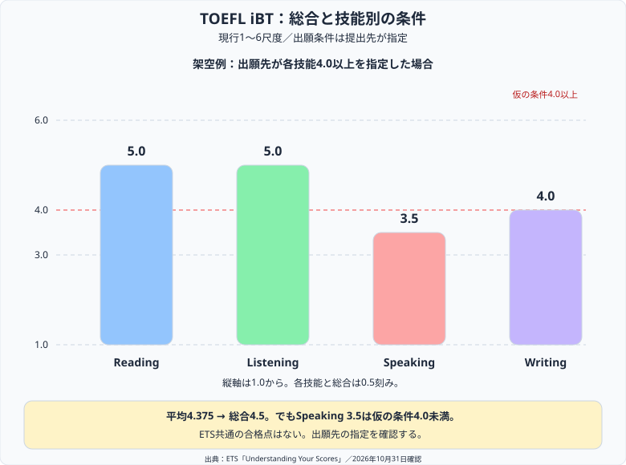

TOEFL iBTを準備するときは、4技能の形式だけでなく、受験料と出願条件も確認しましょう。この記事では現行の公式案内と学習計画の例を分けて紹介します。
会計分野の学習で取り組んだ計画と記録の考え方をもとに、4技能の課題と出願条件を整理します。
この記事で整理した内容から、次の学習で確認することを1つ選び、記録に残してみてください。
TOEFL iBTはReading・Listening・Writing・Speakingの4技能を測る英語試験です。2026年1月21日から試験内容とスコア尺度が更新されました。古い形式の教材や「80点」といった旧尺度の情報だけで計画せず、現行形式と出願先の指定を確認しましょう。
| 項目 | 2026年1月21日以降の内容 |
|---|---|
| 現行スコア | 各技能・総合とも1〜6、0.5刻み。総合は4技能の平均を最も近い0.5刻みに丸める |
| 旧尺度の比較表示 | 移行後2年間は、比較用の0〜120相当の総合スコアも併記 |
| 試験時間 | 説明を含め約2時間。Reading・Listeningは適応型で、問題数や所要時間が変わる場合がある |
| 受験方式 | テストセンターのコンピューター、または監督付きのHome Edition |
| 日本の受験料表示 | US$195（ETS料金ページでJapanを選択した表示。適用される税等は別途。円換算は決済時の条件による） |
| スコア有効期間 | 受験日から2年間 |
出典：ETS「Test Content and Structure」／ETS「Understanding Your Scores」／ETS「Test and Service Fees」（2026年10月31日確認）
確認したETSの資料から、他試験の点数をもとに「何時間でTOEFLの目標に届く」とする一律の必要時間は確認できませんでした。以前の勉強時間の換算表を撤回し、4技能の課題と使える時間から計画する方法に改めました。
ETSに共通の合格点・不合格点はありません。大学・課程などの受入機関が必要スコアを決めます。「学部なら何点」「大学院なら何点」と一律には扱えません。旧0〜120尺度だけで条件が載っている場合は、現行1〜6尺度の扱いを提出先に確認してください。
出典：ETS「Understanding Your Scores」（2026年10月31日確認）
| 記録する項目 | 確認する内容 |
|---|---|
| 募集単位 | 大学名だけでなく学部・専攻・入学年度 |
| 試験条件 | TOEFL iBTの受験方式、受験日、有効期間 |
| 総合条件 | 1〜6尺度の指定。旧尺度のみなら受入機関に確認 |
| 技能別条件 | Reading・Listening・Writing・Speakingごとの指定の有無 |
| 提出方法と締切 | スコアの送付方法と到着期限 |
次の図は、出願先が「各技能4.0以上」を指定したと仮定した架空の例です。全受験者共通の基準ではありません。TOEIC L&Rは2技能の試験で、TOEIC Speaking & Writingは別に実施されています。
出典：IIBC「TOEIC Program DATA & ANALYSIS 2026」4ページ（2026年10月31日確認）

以下のタスク名はETSの現行案内に基づきます。練習方法は編集部の提案です。
Complete the Words、Read in Daily Life、Read an Academic Passageの3種類です。学術文だけに限定せず、日常の文章も含め、語の形・文脈・文章の要点を確認する練習を組み合わせます。
Listen and Choose a Response、Listen to a Conversation、Listen to an Announcement、Listen to an Academic Talkです。講義だけを聞く旧来の説明では現行範囲をカバーできません。場面、話者の意図、必要な情報を聞き分ける練習案です。
聞いた内容を繰り返すタスクとインタビューに答えるタスクです。「独立型・統合型」という旧形式の説明を訂正しました。音声を聞いて発話し、録音を確認する練習と、質問に直接答える練習を分けて行いましょう。
Build a Sentence、Write an Email、Write for an Academic Discussionの3種類です。旧統合型を含む2種類という説明は現行形式に当てはまりません。文法だけでなく、課題の目的や相手に合う内容かを確認します。
出典：ETS「Test Content and Structure」（2026年10月31日確認）
旧0〜120尺度と新1〜6尺度の対応は範囲として示されています。旧80点という目標を単一の新スコアに機械的に置き換えず、最新の募集要項を確認します。移行期の比較用総合スコアと、現在の技能別スコアも区別してください。
出典：ETS「Understanding Your Scores」（2026年10月31日確認）
学習時間を増やす前に、提出先と締切を決める提案です。技能別の最低点が指定されている場合は、その条件との差を確認します。総合条件だけの場合は、4技能の得意・不得意と改善しやすい項目を見て時間を配分しましょう。